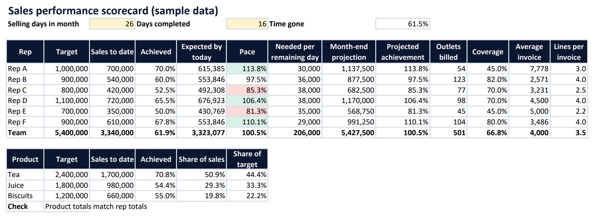

On the sixteenth selling day, a team has reached 61.9% of its monthly target. Is that good? The percentage alone cannot say. It depends on how much of the month has gone, who is carrying the result, which products are selling and how many customers are buying.
This guide is about choosing and reading the measures on a sales performance dashboard. For the Excel construction steps, such as data layout, month selectors and charts, see the Excel dashboard guide. The example here is a made-up team of six representatives, day 16 of 26 selling days.
Download the example sales scorecard (.xlsx)

1. Start with decisions, not charts
List what a sales manager can change during the month: where representatives visit, which customers get attention, which products are pushed, and what support or stock is needed. Choose measures that point to those actions. A figure that nobody can act on belongs in a detailed report, if anywhere.
Also agree what a "sale" is. Sales from the company to a distributor and sales from the distributor to shops can move very differently. Say which one the dashboard shows. See primary and secondary sales.
2. Compare sales with time gone: pace
After 16 of 26 days, 61.5% of the selling time has passed. A simple pace measure compares sales with the part of the target you would expect by now:
Expected by today = monthly target × days completed ÷ total selling days
Pace = sales to date ÷ expected by todayThe team has sold 3,340,000 against a target of 5,400,000. Its achievement of 61.9% is just ahead of time gone, giving a pace of 100.5%.
This assumes sales arrive evenly. In many businesses they do not: month-end loading, weekly visit routes, salary days and holidays change the pattern. If your history shows that only a smaller share is usually sold by day 16, compare with that pattern instead.
3. Show what is still needed and where you are heading
Needed per remaining day = (target − sales to date) ÷ days left
Month-end projection = sales to date ÷ days completed × total daysThe team needs 206,000 a day for the last 10 days, compared with an average of 208,750 so far. At the same average it would finish at about 5,427,500, or 100.5% of target.
Notice that pace and projected achievement are the same number. Both rest on the same straight-line assumption, so they are not two independent pieces of evidence. Pick one for the headline. A projection is not a forecast of what customers will do.
4. Look behind the team total
A pace of 100.5% sounds comfortable. The scorecard shows that three of the six representatives are behind pace:
| Rep | Pace | Needed per day | Outlet coverage | Average invoice | Lines per invoice |
|---|---|---|---|---|---|
| Rep A | 113.8% | 30,000 | 45.0% | 7,778 | 3.0 |
| Rep B | 97.5% | 36,000 | 82.0% | 2,571 | 4.0 |
| Rep C | 85.3% | 38,000 | 70.0% | 3,231 | 2.5 |
| Rep D | 106.4% | 38,000 | 70.0% | 4,500 | 4.0 |
| Rep E | 81.3% | 35,000 | 45.0% | 5,000 | 2.2 |
| Rep F | 110.1% | 29,000 | 80.0% | 3,486 | 4.0 |
The surplus from A, D and F is covering the shortfall from B, C and E. If one large order behind that surplus were cancelled, the team picture could change quickly.
The colours in the example are green at 100% or more and red below 90%. Those limits are choices for the example.
5. Add coverage: how many customers are buying
Coverage = outlets billed at least once so far ÷ outlets assignedThe team has billed 501 of 750 outlets, 66.8%. Count each outlet once, however many invoices it received, and keep the outlet list current. Closed shops left on the list make coverage look poor; removing hard shops to improve the figure makes it meaningless.
Rep A is ahead of pace with only 45% coverage and a large average invoice. That could mean strong key customers, or dependence on a few. Rep B reaches 82% of outlets with small invoices. These raise different questions:
- For A: how much of the total comes from the largest few customers, and which outlets have not been billed?
- For B: could more products be sold in the same visit, and are the outlets the right size for the target?
- For E: low coverage and the fewest lines per invoice. Check the route, stock availability, territory changes and absence before judging effort.
6. Measure the size and breadth of each sale
Average invoice = sales ÷ number of invoices
Lines per invoice = product lines sold ÷ number of invoicesThe team averages 4,000 per invoice and 3.5 lines. A line is usually one product on one invoice, but define it for your system, because pack sizes may be counted separately. Splitting one order into several invoices raises invoice count and lowers the average, so watch how invoices are raised if you reward these figures.
7. Check product mix
| Product | Achieved | Share of sales | Share of target |
|---|---|---|---|
| Tea | 70.8% | 50.9% | 44.4% |
| Juice | 54.4% | 29.3% | 33.3% |
| Biscuits | 55.0% | 19.8% | 22.2% |
With 61.5% of time gone, only Tea is ahead. Juice and Biscuits are behind even though the total is on pace. If margins differ between products, a change in mix can change profit even when sales hit target. A sales dashboard that shows only value will not show that.
8. Arrange the page in reading order
- Headline: sales, target, pace and needed per day, with the data date.
- Where: area and representative, sorted by the gap that matters.
- Why it may be happening: coverage, invoice value and lines.
- What: product mix.
- Checks: product totals equal representative totals. The example flags it if they do not.
9. Be careful with incentives
People respond to what is measured. A value-only target can encourage heavy end-of-month loading or ignoring small customers. A coverage-only target can encourage very small token orders. Use a few measures together, review returns and collections where relevant, and see the weighted KPI scorecard guide before linking pay to any of them.
Advantages and limits
Advantages: problems become visible while there is still time to act, and review meetings can start from the same figures.
Limits: the measures describe results, not causes. They do not show stock shortages, competitor activity or relationship quality unless you record them. Straight-line pace can mislead early in the month, when a few days of data swing widely.
Common mistakes
- Comparing a part month with a full target without showing time gone.
- Counting calendar days instead of selling days.
- Averaging representatives' percentages instead of using totals.
- Counting an outlet each time it is billed.
- Ranking people with very different territories as if they were the same.
- Showing figures without saying when the data was last updated.
Practical next steps
Start with pace, needed per day and coverage. Add the other measures when your invoice data can support them. Test one person's figures by hand before you share the page. For a quick single-target check, use the Sales Target Calculator.
Frequently asked questions
Which measure matters most?
It depends on the decision. During a month, pace with the amount still needed per day is a useful start, but it should not be read without knowing who and what the result depends on.
Should I use calendar days or selling days?
Use the days on which sales can normally happen, and agree them before the month starts. Adjust for holidays that affect your market.
What if sales are concentrated at month end?
Build the expected figure from your usual pattern instead of a straight line, using several past months. Say which method the dashboard uses.
Why does a representative with high sales show low coverage?
Sales may be concentrated in a few large customers. Check the largest customers' share and which assigned outlets have not been billed.
Can I use this for services?
Pace and required daily value can apply. Replace outlet coverage and invoice lines with measures that fit how you win and serve customers.
How often should it be updated?
As often as the manager can act on it and the data is reliable. Show the last data date in every version.
References
- Microsoft Support: SUMIFS. Totalling sales by representative, area or product.
- Microsoft Support: COUNTIFS. Counting records that meet conditions.
- Microsoft Support: Conditional formatting. The pace colours.
- Microsoft Support: Create a PivotTable. Exploring sales by several dimensions.
Links checked on 25 November 2026.
The references cover Excel features. All names and figures are made up. The management suggestions are general information, not professional advice.